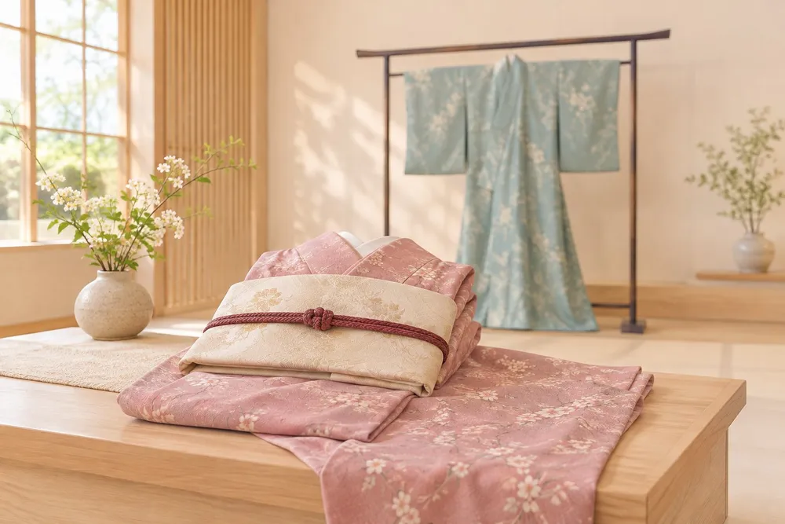

トップ ＞ 和想館について
和想館について
ABOUT ／ ご紹介ページの構成案
着物を、もっと身近に。
特別な日の一着も、日々の楽しみとしての一着も。着物にふれるきっかけや、長く楽しむための情報に出会える場所へ。
この試作では、「知る」「相談する」「足を運ぶ」へと自然につながる紹介ページを提案しています。
※上記の見出し・文章は、自主制作のために作成したコピー案です。

和想館のことを知る
ここには、和想館の紹介文を掲載する想定です。大切にしている考え方や、店舗での体験が伝わる文章を、確認済みの情報をもとにまとめます。
現在はページ構成を確認するための仮原稿です。沿革・店舗数・サービス内容など、未確認の情報は掲載していません。
このサイトで見られること
※リンク先のイベント・店舗情報も架空のサンプルです。実際の開催案内・店舗案内ではありません。
この試作について
小倉英嗣が、Web制作・デザイン・AI活用の学習と提案を目的に制作した非公式の自主制作です。和想館からの依頼による制作物や、公式サイトではありません。
表示・操作の確認を目的としており、予約受付・商品購入・お問い合わせの送信は行いません。